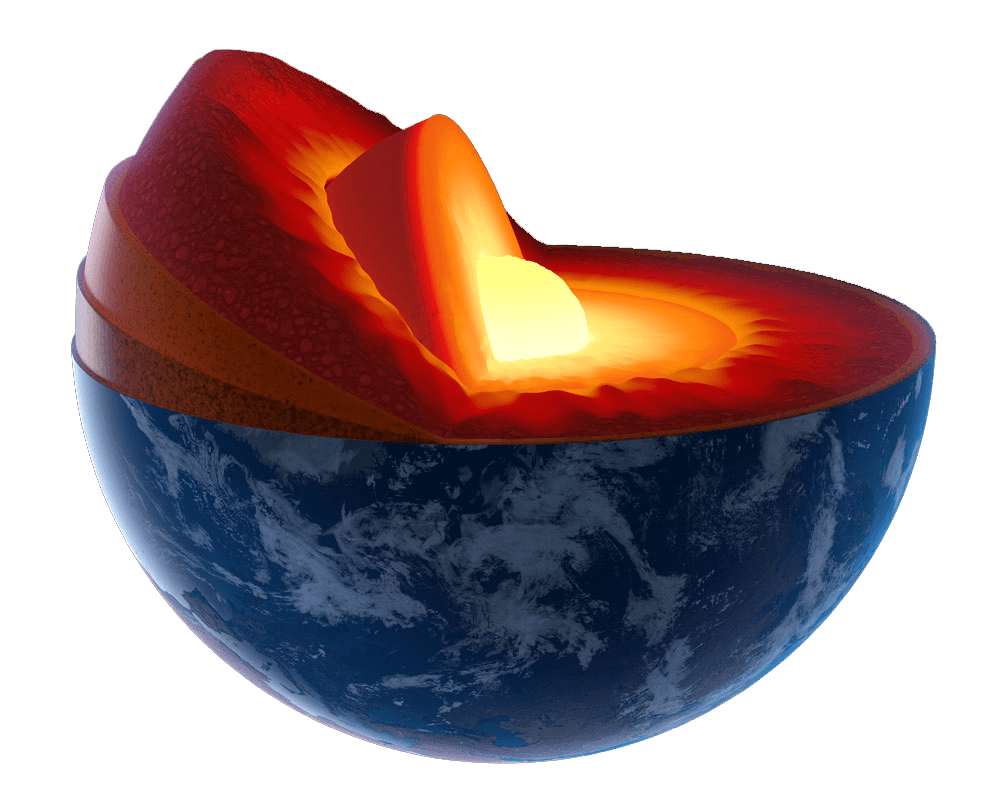

Uma das primeiras perguntas sobre a formação da terra é como tudo começou. Então antes de irmos ao tempo geológico vamos ver a teoria (lembrando que só é possível usar esse nome porque tudo não passa de uma hipótese, então não tem nenhuma certeza em relação a esse assunto) da formação de nosso planeta. Como tudo surgiu e se formou.
Existem duas teorias principais: a teoria do Criacionismo e a teoria do Big Bang. Existem diversas teorias mas abordaremos a do Big Bang.
www.spacetelescope.org/announcements/ann1301/
Teoria do Big Bang: Todos temos dúvidas quando se trata da formação da terra, então para que você possa entender melhor, iremos lhes explicar como tudo começou...
Basicamente, a cerca de 4,6 bilhões de anos atrás surgiu o nosso planeta (de acordo com a teoria mais aceita sobre esta questão), graças a força gravitacional, uma grande quantidade de matérias existentes no espaço se agruparam em torno de um centro de massa.
Estima-se que o processo de surgimento da Terra ocorreu logo após a formação do nosso sistema solar, por consequência deste evento.
O sol, que se originou de uma grandiosa nuvem de gás e poeira estelar, foi o grande motor para o surgimento da Terra e seus vizinhos. Isso porque algumas partes remanescentes dessa nuvem deram origem a componentes sólidos que iriam, mais tarde, formar a estrutura dos planetas, com gelo e rocha.
Logo depois, a acumulação de energia radioativa das rochas da Terra fez com que o material formado entrasse em estado de fusão. Os materiais mais pesados, como o Ferro e o Níquel, se acumularam nas partes mais profundas e formam, hoje, o núcleo terrestre.
A teoria do Big Bang foi reforçada pelos estudos de Edwin Hubble (1889-1953) de que as galáxias estão se afastando em todas as direções. Nas suas observações, Hubble identificou que quanto mais distante a galáxia, maior é a velocidade com que ela se afasta de nós (Lei de Hubble).
A Lei de Hubble nos leva a conclusão que, se o universo está em expansão, em algum momento do passado o seu tamanho era mínimo. Sendo a grande expansão a responsável pela criação de tudo, inclusive o espaço e o tempo.
vistanews.ru/science/28634
É preciso entender que há tipos diferente de tempo quando estamos falando de geologia, o tempo humano, que é o que estamos habituados a usar todos os dias, e o tempo geológico que é o tempo que usamos para datar os eventos relacionados a estrutura da terra e a como chegou até onde conhecemos hoje, e a diferença de “pouco e muito tempo” entre os dois são bem distintas.
Então partindo disso após 500 milhões de anos desde o início do processo de formação a crosta terrestre, então inexistente, começou a ganhar forma a partir da gradativa solidificação do material rochoso incandescente que flutuava sobre a superfície.

www.mytechnosys.com/geological-sample-preparation.html
Depois da formação da crosta terrestre, os vulcões que se constituíram junto a ela entraram em erupção ao longo de milhões e milhões de anos, emitindo os gases que formaram a atmosfera terrestre, muito embora a composição dessa atmosfera, na ocasião, fosse muito diferente dos dias de hoje. Entre esses gases, havia muito vapor de água que foi se condensando e dando origem a muitas e grandiosas chuvosas, responsáveis pela existência dos oceanos da Terra, que apresentavam uma composição inicial bastante ácida.
Ressaltando que a crosta terrestre possui uma forma não contínua, ou seja, durante o seu processo de formação, por conta da interferência das forças internas realizadas pelo manto terrestre, ela estruturou-se em vários “pedaços”, que chamamos de placas tectônicas e que estão em constante movimento, e devido a isso há constante mudança na estrutura que conhecemos, e também é a causa de abalos sísmicos ao redor do planeta.
Resumindo, o planeta Terra – como ou outros planetas do Sistema Solar – se formou a partir de pedaços de rocha que “sobraram” após a formação do Sol, graças à ação da força da gravidade.